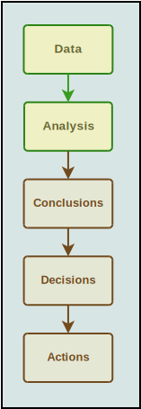
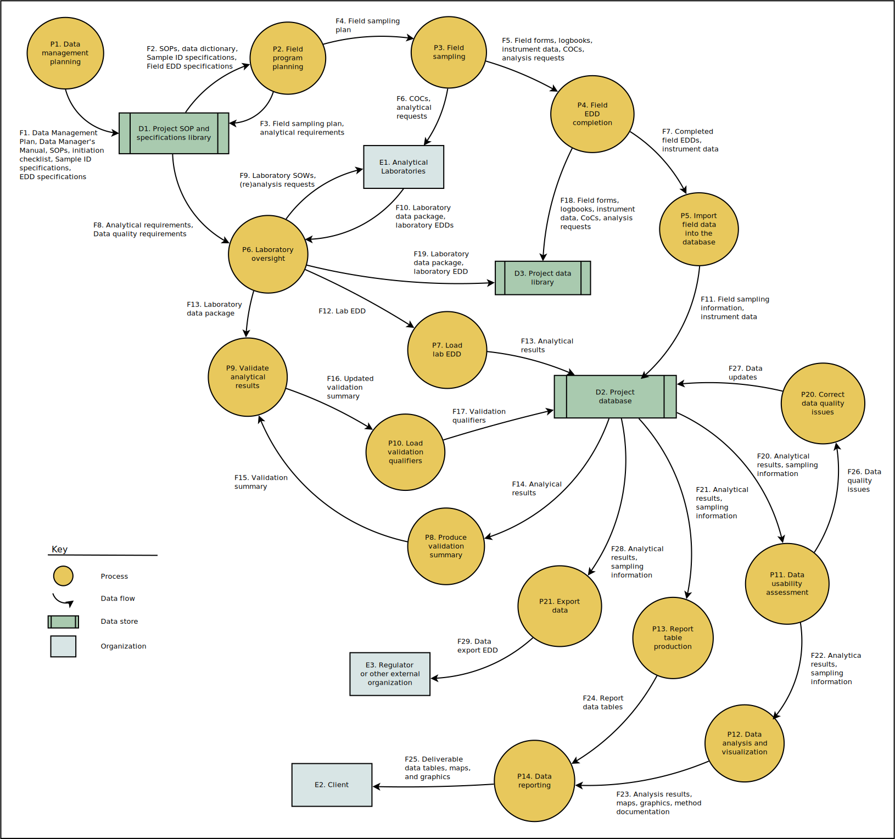
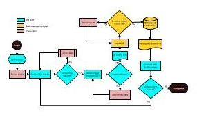
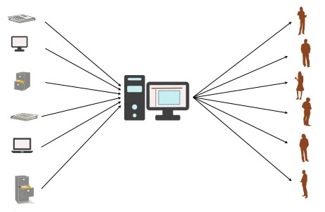
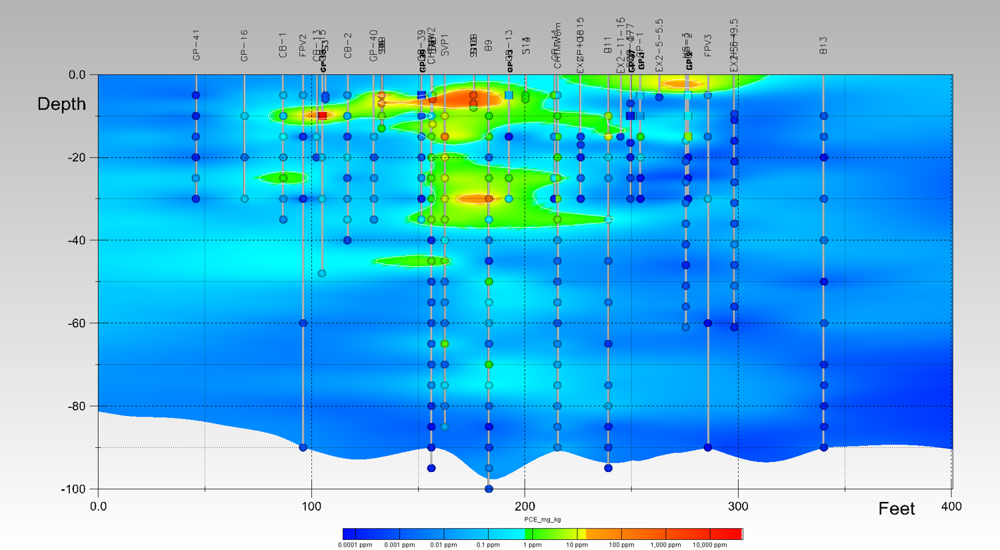
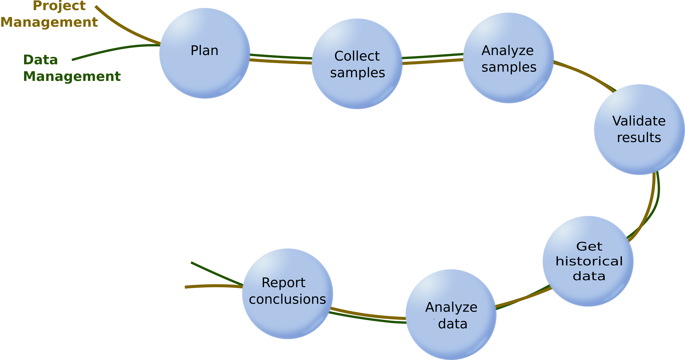
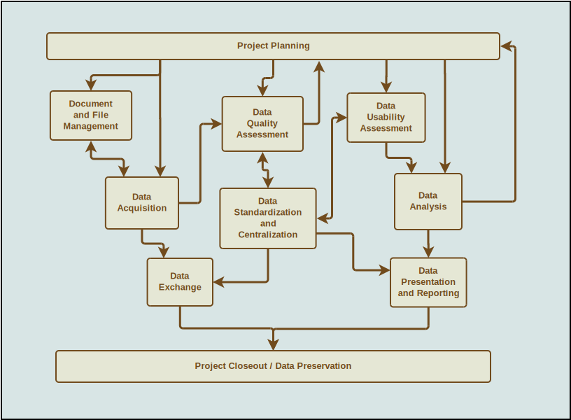
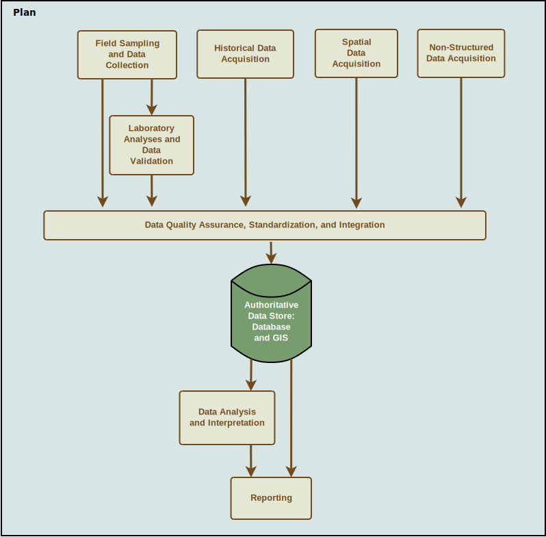

Data Management
Data management staff support internal and external clients by compiling, organizing, and standardizing data so that it is available and suitable for technical analyses; by conducting geospatial analyses and producing map figures; by carrying out a variety of data summarization and data analysis tasks including statistical analyses, graphic visualization, and data modeling; and by developing web sites for presentation of data and analytical results.
Data are the foundation of most of the decision support services. Interpretations, assessments, judgments, and recommendations can only be as good as the underlying data. Because data are often voluminous and complex, data management practices should have established goals, standards, practices, and tools for handling data efficiently and consistently.
Goals
Data management standards and practices are designed to meet the following goals:
- Establish and maintain the highest level of data quality that is consistent with the needs of each project. Six dimensions of data quality, and the approaches to handling them, are described on the Data Quality page.
- Establish data security: ensuring that clients’ data are available only to authorized project staff, and that data revisions are controlled and documented.
- Ensure that data are accessible and available to project staff either directly or with the assistance of experienced data managers.
- Carry out data summarization and analysis using consistent, efficient, and technically appropriate methods, including both standard and cutting-edge analysis methods.
- Document the provenance, handling, and history of each data set, providing traceability analogous to chain-of-custody procedures for digital data.

Data Management Standards
The following data management standards help assure that data management activities are carried out efficiently, consistently, flexibly, and reliably within and across projects.
- Use of a centralized, standardized, authoritative database (ordinarily IDB for environmental data).
- Adhering to data management best practices.
- Use of scripts to perform all changes to data.
- Documentation
- Data Management Plan
- Completed checklists
- Script documentation
- Issue logs
- Templates for entry and uploading of field sampling information.
- Checklists for project initiation, data set evaluation, and other activities
- EDD templates for laboratory analytical results
Data Management Activities
Data management is not a single activity that occurs at a discrete point in a project. Data management consists of a set of interrelated activities–acquisition, organization, summarization, analysis, and presentation of data, among others–that runs through, and connects, other project tasks. Project tasks, and their data management elements, are described briefly below.

Project Planning
Incorporation of data management planning into overall project planning helps to ensure that appropriate staff, tools, and budget are available, and that schedules and responsibilities are aligned so that data quality objectives are met. The pages on data management plans, data management checklists, workflows for sampling and historical data, and budgeting provide additional information and tools.
Data Acquisition
Project data may be obtained from a variety of sources, each needing different strategies to identify, obtain, review, and standardize the data. Data management staff can lead, guide, or perform these activities.
Data Quality Assessment
Assessment of data quality may be required at several different points in a project, and vary depending on the type and origin of the data. Data management staff work closely with analytical chemists, quality assurance specialists, and other technical staff to perform or support screening-level and in-depth technical analyses of data quality. The Data Quality page contains more in-depth information on the dimensions of data quality and our approaches to assess, improve, and document it.

Data Organization, Standardization, and Centralization
Core elements of data quality are that data are unambiguous, do not contain internal inconsistencies, and are centrally available to avoid problems resulting from multiple versions of a data set. Organization of data to meet these requirements is one of the core functions of data management activities. Key goals of these data management activities are to ensure that data are:
- As correct as possible, internally consistent, and unambiguous
- Handled consistently across all projects
- Centralized to prevent proliferation of multiple inconsistent versions
- Readily available to project technical staff in whatever formats are needed
- Managed efficiently and consistently across changes in staff availability.
Data management staff use databases instead of spreadsheets because databases provide better data integrity, speed, documentation, replicability of operations, QA-ability of operations, security, and automated backups.
Document and file management
Documents and files must not only ordinarily be managed to establish the provenance of project data, but management of documents or files may be a completely separate project goal or requirement. Different tools are appropriate–and available–for document and file management in different circumstances.

Data Summarization, Analysis, Reporting, and Visualization
Many complex data summaries can be automated so that they can be conducted reliably and efficiently, and easily revised and updated. Quality assurance reviews can be more easily conducted on automated (scripted) processes than on point-and-click processes. Database, GIS, and statistical tools all support automation of data summarization, analysis and visualization tasks. A set of standard data summaries can be easily adapted to meet most common data summarization and analysis needs.

Data exchange with clients, agencies, and other consultants
When data are to be provided to clients or other consultants, the data should be complete, have well-established data integrity, have documented data quality, and be provided in a well-defined format.
Project closeout
When a project is completed, or even when it is put on hold for a lengthy period, there may be tracking and documentation tasks to be completed. Project data may be set to read-only so that it cannot be subsequently modified in any way for any reason. Automatic backups of project data should ordinarily be discontinued and a final archive copy of the complete set of data created. These steps will ensure that the future value of the data will not be lost to the client.
Many project activities such as sample collection, sample analysis, and data analysis occur in a sequence, like beads on a thread. However, data management activities, like project management activities, run through and connect all of these other activities.

An analogy can also be made to the somatic systems of a vertebrate: there are organs with specialized functions like the lungs, liver, kidneys, eyes, skin, and musculo-skeletal systems, and there are also systems that connect these so that they interact and work together: the nervous system (a project management analogue) and the circulatory system (a data management analogue).
The data management activities that are carried out throughout a project’s lifecycle are conducted partly in sequence and partly in parallel.

Data Management Planning
Planning for data management activities helps to avoid later surprises about the type or amount of work required to support creation of project deliverables. Data management activities should be integrated with other project activities, and both the tasks to be completed and the level of effort required should be planned so that they contribute to meeting project goals. Planning data management activities early in the project helps to ensure that they are carried out consistently and efficiently, and that appropriate tools and skilled personnel are available. In some cases you may get by without planning, relying only on the skills and experience of data management staff. In those cases, however, data management activities for your project will most likely be carried out according to the plan for some other project–or maybe even pieces and parts of several different projects if several people work on the project without any common plan.
Data management activities should be incorporated into the project plan. A standalone data management plan (DMP) may be required for projects conducted under the oversight of regulatory agencies, but even when it is not required, a DMP will provide all project staff with a reference and resource for conducting the work consistently and efficiently. Documenting data management standards and approaches is particularly valuable for projects where personnel may change over time. A DMP need not be complex, and may evolve over the course of a project. To simplify the creation of a project-specific DMP, a template is available to use as a foundation. This template describes default standards and approaches for data management activities, and may be useful for project planning even if a project-specific DMP is not required.

Documentation
Documentation of project data management activities includes some or all of the following components:
- A data management plan (DMP)
- A data managers’ manual (DMM)
- Data management SOPs
- A revision date and the data manager’s name automatically recorded on every row of every table
- An audit log that automatically records every addition, deletion, and modification to every table
- Notes in the header of SQL scripts
- Logs of data issues and resolutions
- Logs of script actions
- Custom logs of script actions that may be created by the data manager and some standard scripts.
See the page on data management procedures, processes, and workflows for additional information.
Data Management Resources and Tools
- Boilerplate text and presentations on data management topics.
- ExecSQL, a Python program that is the primary tool for automating data management operations.
- Additional software tools for data manipulation, available to network and Citrix users. Some of these are open-source, others were developed by data management staff.
- Design documents and tools for environmental databases, including:
- SQL code to initialize a new PostgreSQL instance of the database
- Specifications for field and laboratory electronic data deliverables (EDDs), including import procedures and SQL scripts to carry out QA checks and data loading.
- A library of SQL code to carry out common (or complex) data summarizations
- A (Python) software tool for running a SQL script on multiple PostgreSQL databases sequentially.
- An Access template for loading and export of data (using the dbmigrator program, see below)
- Tools to review the inventory of project databases.
- Software tools to assist with manipulation of data files (e.g., automated editing and crosstabbing and un-crosstabbing CSV files).
- A (Python) software tool to assist with exporting database audit log data.
- ArcGIS templates.
- Common data, such as data sets with national scope.
- Project-specific data sets and ArcGIS project files used by GIS staff.
- Boilerplate text and presentations related to data analysis
- Technical approaches and guidance on a variety of topics
- A library of R scripts for data analysis and presentation
- A library of MATLAB scripts for data analysis